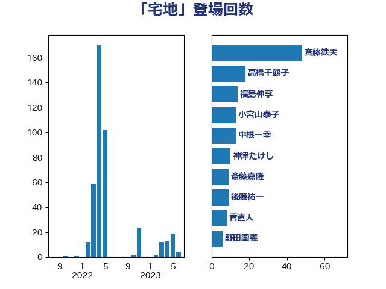

単語「宅地」

| 斉藤鉄夫 | 公明党 | 48 回 |
| 高橋千鶴子 | 日本共産党 | 18 回 |
| 福島伸享 | 無所属 | 14 回 |
| 小宮山泰子 | 立憲民主党 | 13 回 |
| 中根一幸 | 自由民主党 | 13 回 |
| 神津たけし | 立憲民主党 | 10 回 |
| 斎藤嘉隆 | 立憲民主党 | 9 回 |
| 後藤祐一 | 立憲民主党 | 9 回 |
| 菅直人 | 立憲民主党 | 8 回 |
| 野田国義 | 立憲民主党 | 6 回 |
| 西銘恒三郎 | 自由民主党 | 6 回 |
| 泉田裕彦 | 自由民主党 | 6 回 |
| 細田博之 | 自由民主党 | 5 回 |
| 空本誠喜 | 日本維新の会 | 5 回 |
| 伊藤渉 | 公明党 | 5 回 |
| 谷公一 | 自由民主党 | 4 回 |
| 芳賀道也 | 国民民主党 | 4 回 |
| 渡辺博道 | 自由民主党 | 4 回 |
| 斎藤アレックス | 国民民主党 | 4 回 |
| 庄子賢一 | 公明党 | 4 回 |
| 大口善徳 | 公明党 | 4 回 |
| 城井崇 | 立憲民主党 | 4 回 |
| 中山展宏 | 自由民主党 | 4 回 |
| 鈴木敦 | 国民民主党 | 3 回 |
| 野間健 | 立憲民主党 | 3 回 |
| 酒井庸行 | 自由民主党 | 3 回 |
| 足立康史 | 日本維新の会 | 3 回 |
| 西村明宏 | 自由民主党 | 3 回 |
| 渡辺周 | 立憲民主党 | 3 回 |
| 深澤陽一 | 自由民主党 | 3 回 |
| 浜野喜史 | 国民民主党 | 3 回 |
| 浜口誠 | 国民民主党 | 3 回 |
| 浅川義治 | 日本維新の会 | 3 回 |
| 杉尾秀哉 | 立憲民主党 | 3 回 |
| 小山展弘 | 立憲民主党 | 3 回 |
| 塩田博昭 | 公明党 | 3 回 |
| たがや亮 | れいわ新選組 | 3 回 |
| 鬼木誠 | 立憲民主党 | 2 回 |
| 長浜博行 | 無所属 | 2 回 |
| 羽田次郎 | 立憲民主党 | 2 回 |
| 秋葉賢也 | 自由民主党 | 2 回 |
| 石井正弘 | 自由民主党 | 2 回 |
| 横沢高徳 | 立憲民主党 | 2 回 |
| 榛葉賀津也 | 国民民主党 | 2 回 |
| 柳ヶ瀬裕文 | 日本維新の会 | 2 回 |
| 市村浩一郎 | 日本維新の会 | 2 回 |
| 岩渕友 | 日本共産党 | 2 回 |
| 山口俊一 | 自由民主党 | 2 回 |
| 室井邦彦 | 日本維新の会 | 2 回 |
| 古川康 | 自由民主党 | 2 回 |
| 仁比聡平 | 日本共産党 | 2 回 |
| 鈴木義弘 | 国民民主党 | 1 回 |
| 金子恵美 | 立憲民主党 | 1 回 |
| 野中厚 | 自由民主党 | 1 回 |
| 野上浩太郎 | 自由民主党 | 1 回 |
| 足立敏之 | 自由民主党 | 1 回 |
| 赤木正幸 | 日本維新の会 | 1 回 |
| 藤原崇 | 自由民主党 | 1 回 |
| 若松謙維 | 公明党 | 1 回 |
| 竹内真二 | 公明党 | 1 回 |
| 福岡資麿 | 自由民主党 | 1 回 |
| 田名部匡代 | 立憲民主党 | 1 回 |
| 牧島かれん | 自由民主党 | 1 回 |
| 森田俊和 | 立憲民主党 | 1 回 |
| 星北斗 | 自由民主党 | 1 回 |
| 早坂敦 | 日本維新の会 | 1 回 |
| 徳永エリ | 立憲民主党 | 1 回 |
| 広瀬めぐみ | 自由民主党 | 1 回 |
| 山東昭子 | 自由民主党 | 1 回 |
| 山本香苗 | 公明党 | 1 回 |
| 山本太郎 | れいわ新選組 | 1 回 |
| 山下芳生 | 日本共産党 | 1 回 |
| 小島敏文 | 自由民主党 | 1 回 |
| 宮本岳志 | 日本共産党 | 1 回 |
| 大岡敏孝 | 自由民主党 | 1 回 |
| 大串正樹 | 自由民主党 | 1 回 |
| 和田政宗 | 自由民主党 | 1 回 |
| 古川元久 | 国民民主党 | 1 回 |
| 勝俣孝明 | 自由民主党 | 1 回 |
| 伊藤孝江 | 公明党 | 1 回 |
| 三上えり | 立憲民主党 | 1 回 |